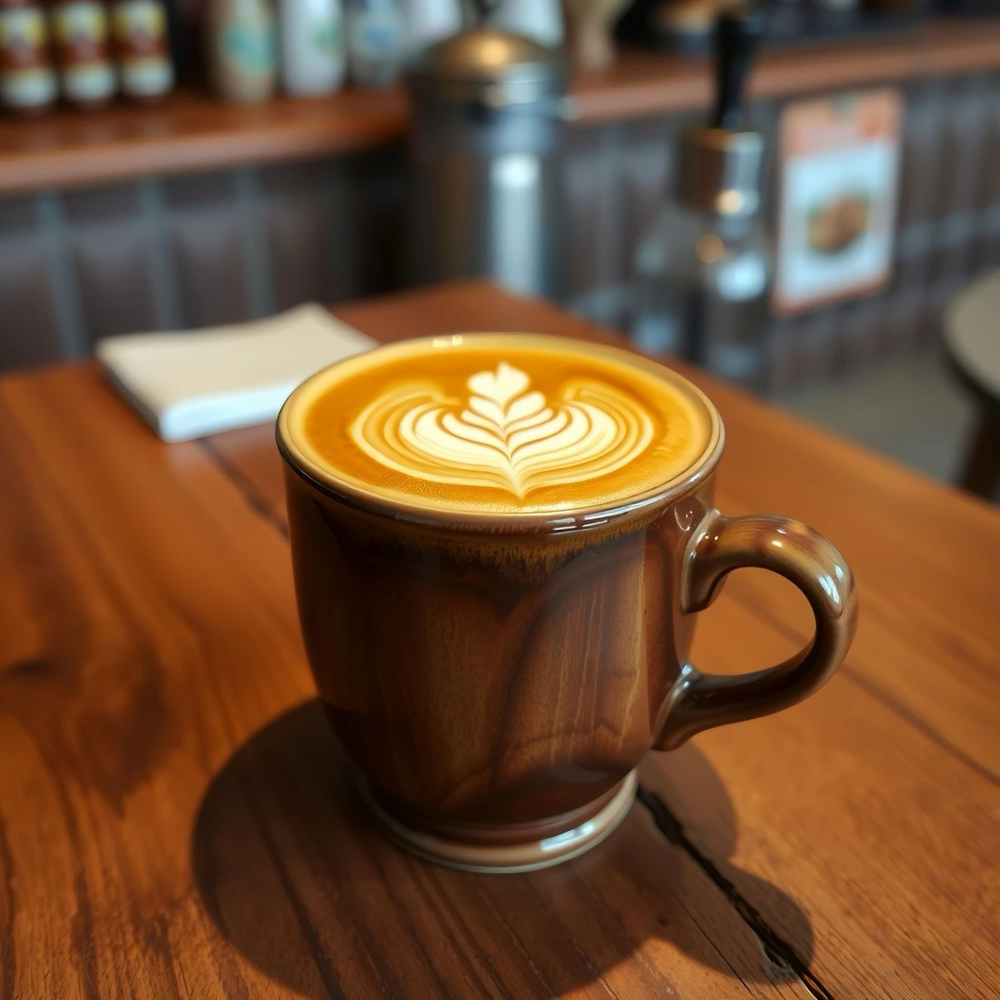
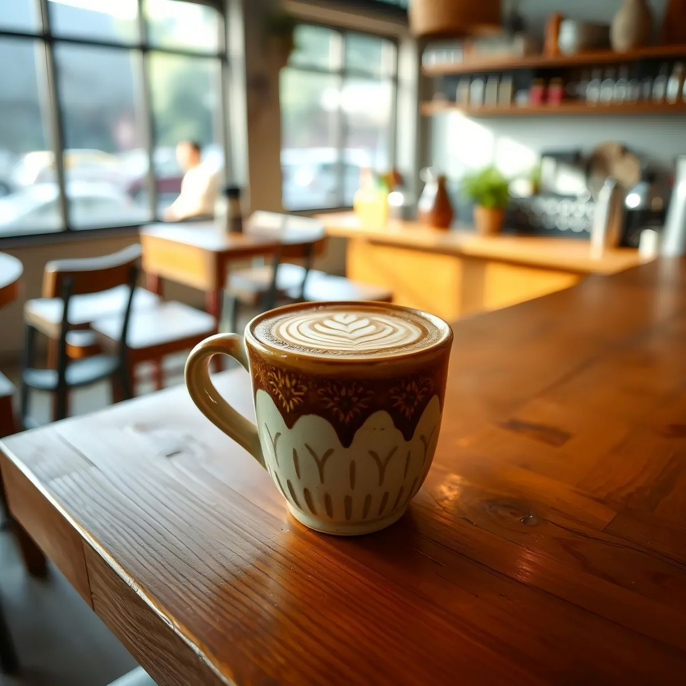
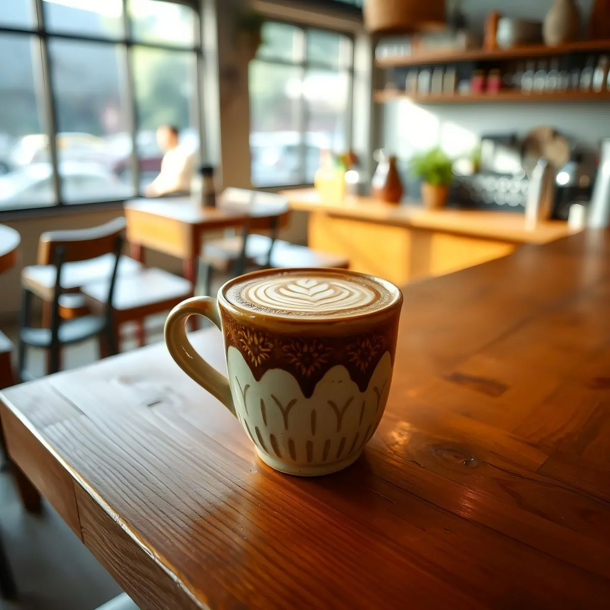
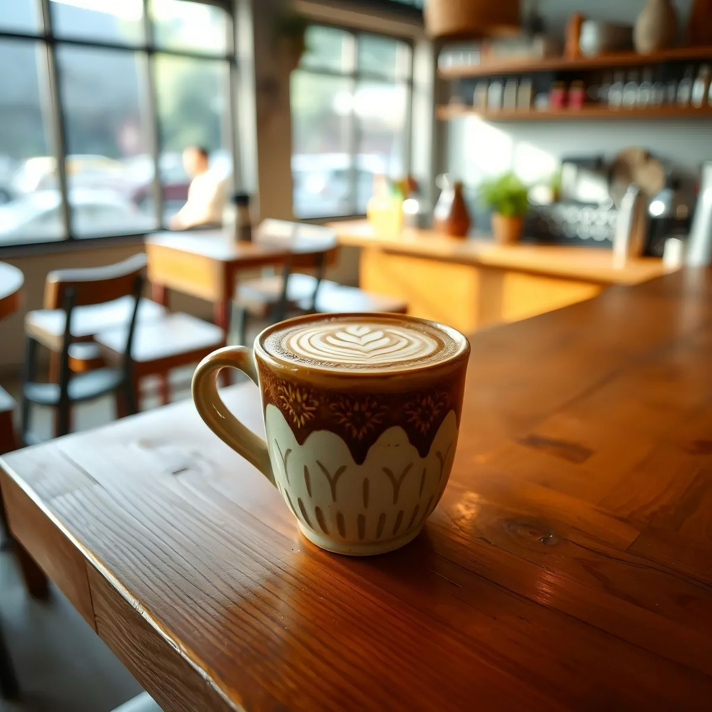

About US
WaroenKKopi was founded in 1990 by Alfin to bring high-quality coffee to everyone. We carefully select and roast the best beans to ensure a rich and authentic taste. More than just coffee, WaroenKKopi is a place for connection and shared moments. With decades of dedication, we continue to serve excellence in every cup.
Below are the favorite menus at WaroenKKopi.


 

